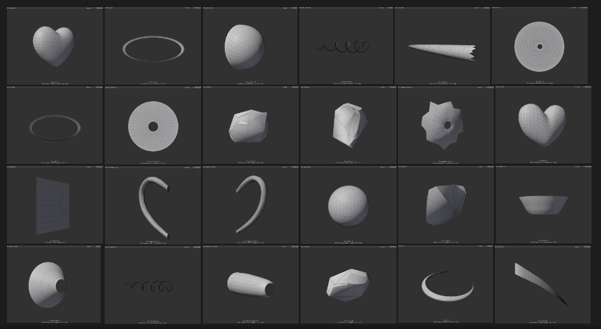
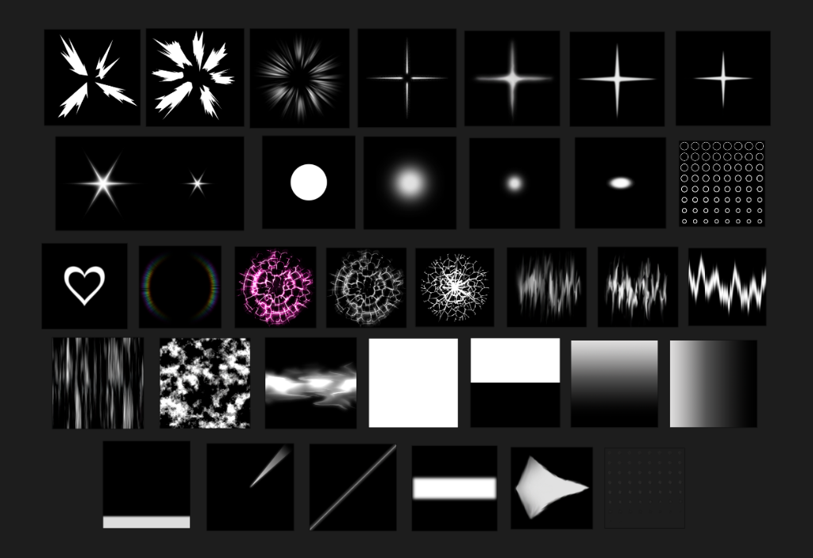

Game Effects Works
Cute Beam & Explosion
"幸せ×魔法少女×爽快感" ビーム&爆発エフェクト
PROJECT OVERVIEW
幸せ×魔法少女×爽快感をコンセプトに制作したオリジナルエフェクト作品です。
幸せの要素としてハートをたくさん詰め込み、色はアクセントに黄色を使いました。ビームの先端ではハートを4つ並べ四葉のクローバーのような見た目にした点にこだわりました。
魔法少女の要素として彩度の高いピンク色をベースカラーに使用しました。ピンク色に幅を持たせることで飽きが来ないような見た目になるように工夫しています。
爽快感を得てもらうために爆発の直前に一瞬白黒のポストエフェクトを用いたり爆発を勢いよく広げるようにしました。
DETAILS
PROCESS 制作過程
WORKFLOW ワークフロー
集め
洗い出し
メッシュ制作
SETTINGS 設定
コンセプト・テーマ
- エフェクト内容
- チャージ → ビーム → 白黒フラッシュ → 大爆発
- 属性
- 草
- 雰囲気
- 幸せを感じる、強い愛の感情、全力でぶつける
- 感覚
- 爽快さと勢いのある重さ
- スタイル
- セミリアル、スタレのキュレネ、まどドラ
構成要素（幸せ要素）
- ハート
- 四つ葉
- 黄色
- ピンク
- ハートのクリスタル
- ビームの発射口周辺のオーラをハート型に
- ビームのコアに心臓のような動き
- 白黒でディストーション（歪んだ愛を表現）
- ハート型の爆発の煙
特徴
必殺技級の大規模エフェクト。でかい爆発。
爆発の瞬間に白黒演出を入れる。
大きい光が回転。
ビーム・チャージの段階強化。
ハートのクリスタルが最後粉々になりキラキラ舞い落ちる。
カラーパレット
#F74FF5
#672166
#FFD1E8
#FA96EB
Accent
Accent
Accent
構成案（起承転結）
起 (Introduction) Max 2秒
- 中心に向かってエネルギーを集める
- コア部分にハートがスケール0から大きくなっていく
- コアを覆う球が出現。最初輪郭はなくオーラがだんだん形になって球になる
- 球は草属性を感じられるような模様、ラインを走らせる
- 球の周りもラインを走らせる
- コアのハートが出てき始めるタイミングで下側から2点がハートのリングを作っていく
- 中心のコアはビーム発射直前に一瞬小さくなる
承 (Development)
- 後方に風
- 一直線に光線を発射。発射する瞬間に強い光（溜が終わったことを示す）
- 発射口にはハート型のリング
- 太いビーム（発射口の先端は太く、少し透明にしてなじませる）
- コアのハートを小刻みに拡縮。それに合わせてビームも小さく揺らす
- ビーム構成：中心に強い1本、太いメイン色1本、暗めの1本、オーラ入り1本、ねじった1本
- 発射口から余分なエネルギーとして粒子を溢れさせて飛ばす
- 地面に光の反射を入れる（地面は削らない）
- 人が足元にオーラ
転 (Twist/Climax)
- 画角を変える
- キャラの後方で爆発（キャラはカメラ目線）
- 当たった場所から飛び散る粒子、ハートを4つ出してクローバー型に（威力演出）
- 画面の1/3くらいのビーム
- 爆発直前：ハート→十字フラッシュ（白黒演出）→光の線
- 巨大な半球の爆発。模様は上にスクロール
- 地面に沿うように煙が広がる。2秒ほどかけて画面全体を白く覆う
- カメラ揺れ
- 煙→発光→爆発（たくさんの火花、粒子、ハートが吹雪のように飛ぶ）
- 爆発の周りは円のリング。全体にミストのような煙
- 爆発が瞬時に大きくなった後徐々に広がる → ホワイトアウト
結 (Conclusion)
- 無数のキラキラが漂い、徐々に消えていく（六角形&ひし形）
- 地面付近の煙が上昇しハートの形ができる
- 全体に漂っていたミストは左右にはける（ゆっくり）
- 地面は削り焦げた跡
REFERENCE リファレンス
収集したリファレンス画像
STORYBOARD 絵コンテ
制作した絵コンテ
ROUGH DESIGN ラフデザイン
エフェクト制作を進める中でどんな要素を新たに追加するかを考えるとき、まずはスクリーンショットを撮りその画像の上からPhotoshopなどで簡単にデザインを行っています。
MESH
使用ツール MAYA
TEXTURE
使用ツール Photoshop, AfterEffects, Substance 3D Designer, EmberGen
自作したテクスチャを下に載せています。
ノイズテクスチャのシームレス化処理にPhotoshopの生成AIを使用しています。
自作のテクスチャの他にNOVAシェーダーサンプルプロジェクトのテクスチャも使用しています。
POINTS こだわり・工夫点
ハートのリング
徐々にハートが下から形どられるようにしたい
初め、画像1のようなハートのメッシュにNOVAシェーダーのInverseをオンにすることで輪郭のみ表示させるようにして上下を白と黒で分けたテクスチャをスクロールさせたが、ハートの凹んでいる部分が最後に見えるようにならなかった。
そのため画像2のリング状のハートを作ってUVスクロールさせることで下からハートが凹んだ部分に向かって現れる表現が可能となった。
画像1
画像2
ビーム直撃時に出現する四つ葉を模したエフェクト
同じ画を続けない
ビームを発射しロボットのキャラクターにビームが直撃しているカットに切り替わるが、当初はこのカットの前半約1.5秒はビームが直撃している様子の同じ画が続いていた。しかし、この短い間でも同じ画が続くと見ている人に飽きを感じさせてしまうと思い、ビームの先端に現れるハートを4つ並べ四葉を模したピンク色のエフェクトを徐々に大きくすることで、エネルギーの集約を表現しつつ、同じ画を作らず飽きが来ない体験設計をする工夫を行った。
大きなヒットエフェクト
メッシュ感をなくす
ビームが持続的に敵に当たるためヒット部分にヒットの連続を表現したエフェクトを制作した。
Render Modeをメッシュに設定しパーティクルを1つだけ出してUVスクロールさせるのではなくRate over Timeで複数パーティクルを放出し、寿命を短く、Size over lifetimeで小⇒大になるようにグラフを作り高速でパーティクルを出現させることでメッシュ感を無くすことに成功。
一瞬の白黒表現
爆発の勢いをより感じてもらう表現
自分もプレイしている『崩壊：スターレイル』によく見られる爆発寸前に入る白黒の描写を自身の作品にも取り入れた。爆発の勢いを引き立たせるため直前に一瞬入れることで見ている人にエネルギーの大きさを感じてもらう意図がある。
Post-processingのChannel MixerとLift Gamma Gainを用いて白黒演出を行った。Lift Gamma Gainは白と黒のコントラストを出しながら極端な白飛び、黒潰れが起きないように値を調整した。
煙・地面の質感表現
煙や地面の割れといった自然物、物理的な要素はリアルなものに近づけること
手描きのテクスチャでは自分が表現したい質感を作ることが難しいと判断しこれまで触れていなかったツールにも積極的にアプローチし表現を追求した。
煙はEmberGenでシミュレーションしたものを連番の画像で書き出し、一枚のテクスチャシートにして使用。
地面の割れはSubstance 3D Designerを使用し、プロシージャルなテクスチャ作成を行った。
Sort ModeをBy Distanceにすることで手前側の煙の描画を優先しカメラから距離が離れた煙は手前の煙に隠れるようにして見た目の整合性を取る工夫も行っている。
To be Add
BACK TO LIST